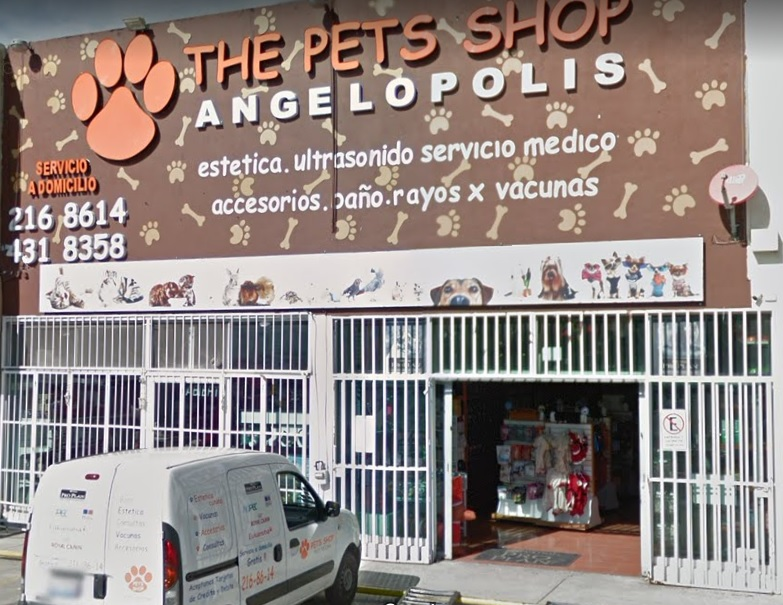

Veterinaria 1 "El mundo de las mascotas"
Dirección: Avenida Independencia 1922, Francisco I Madero.
CP: 74290. Atlixco, Puebla
Telefono:(244)4451251
Veterinaria 2 "Medi-can"
Dirección: Calle 4 Norte 811 B , Colonia Centro
CP: 74200. Atlixco, Puebla
Telefono:(244)4430033
Veterinaria 3 "Guzman"
Dirección: Independencia 1104 , Alvaro Obregon
CP: 74260. Atlixco, Puebla
Telefono:(244)4450477
Veterinaria 4 "Basenji"
Dirección: Calle 7 Sur, Colonia Centro. Atlixco, Puebla
CP: 74200. Atlixco, Puebla
Telefono:(244)4455513
Veterinaria 1 "CONSULTORIO VETERINARIO DRS. ESCOBAR"
Dirección: 15 NORTE 6807, 20 DE NOVIEMBRE
CP: 72230. Puebla, Puebla.
Telefono: (222)220-0439
Veterinaria 2 "VETS MEDICAL CENTER"
Dirección: PRIVADA 11 B SUR 4934, PRADOS AGUA AZUL
CP: 72430. Puebla, Puebla
Telefono:(222)243-6051

Veterinaria 1 "The Pets Shop Angelópolis"
Dirección: Avenida del Castillo No. 5500 - 7 B , Valle Real
CP: 72830. San Andrés Cholula, Puebla.
Telefono: (222) 216-8614

Veterinaria 2 "CLINICA - VETERINARIA MASCOTAS"
Dirección: Calle 4 Nte. 1012, San Juan Aquiahuac
CP: 72810. San Andrés Cholula, Puebla.
Telefono: (222) 304-5887